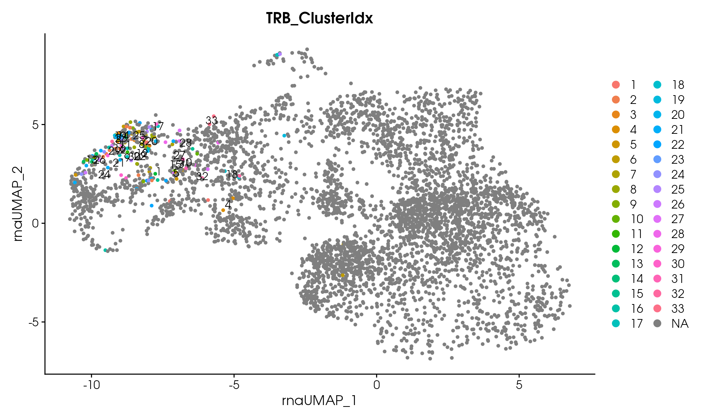
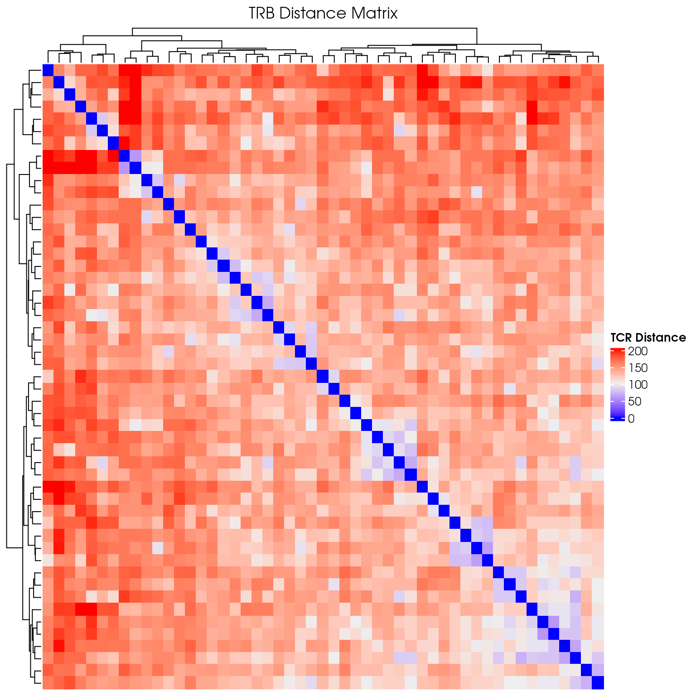
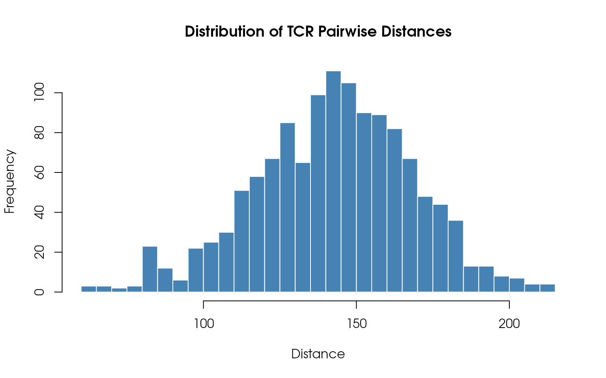

tcrClustR-workflow.RmdThe tcrClustR package provides tools for analyzing
T-cell receptor (TCR) data by computing distance matrices between TCRs
and clustering them into families. This vignette is the consolidated,
primary guide and emphasizes the core production workflow:
CalculateTcrDistances() → RunTcrClustering()
It demonstrates the complete workflow using example data from the
Rhesus Immunome Reference Atlas (https://bimberlab.github.io/RIRA/). Secondary sections
outline the functions chained within RunTcrClustering() and
their purposes.
We’ll use the example dataset included with the package:
# Load example Seurat object with TCR data
data_path <- system.file("extdata", "small_RIRA.rds", package = "tcrClustR")
seuratObj <- readRDS(data_path)
print("Seurat object summary:")
#> [1] "Seurat object summary:"
print(paste0("Number of cells: ", ncol(seuratObj)))
#> [1] "Number of cells: 4500"
print(paste0("Number of features: ", nrow(seuratObj)))
#> [1] "Number of features: 34606"
# Check for required TCR columns
tcr_columns <- c("TRA", "TRB", "TRA_V", "TRA_J", "TRB_V", "TRB_J")
available_tcr_cols <- intersect(tcr_columns, colnames(seuratObj@meta.data))
print(paste0("Available TCR columns: ", paste(available_tcr_cols, collapse = ", ")))
#> [1] "Available TCR columns: TRA, TRB, TRA_V, TRA_J, TRB_V, TRB_J"This will take the TCR CDR3/V/J information (either stored in the seuratObj metadata or as a dataframe) and compute pairwise distances using tcrdist3:
seuratObj_TCR <- CalculateTcrDistances(
inputData = seuratObj,
chains = c("TRA", "TRB"),
minimumCloneSize = 2,
calculateChainPairs = TRUE
)
#> Warning in .flag_valid_rows(metadata = metadata, chains = chains, organism =
#> organism, : The following 15 TRA_V values were not found in the DB:
#> TRAV14-2,TRAV22-1,TRAV22-2,TRAV22-3,TRAV23-1,TRAV23-3,TRAV23-4,TRAV24-1,TRAV25-1,TRAV26-3,TRAV29,TRAV36,TRAV38-2,TRAV8-5,TRDV1-1.
#> Run tcrClustR:::.PullTcrdist3Db(organism = 'human', outputFilePath = '...') to
#> obtain the list of known segments.
#> Warning in .flag_valid_rows(metadata = metadata, chains = chains, organism =
#> organism, : The following 11 TRB_V values were not found in the DB:
#> TRBV2-1,TRBV2-2,TRBV2-3,TRBV3-3,TRBV3-4,TRBV5-10,TRBV5-9,TRBV6-2-1,TRBV7-10,TRBV7-5,TRBV7-7-1.
#> Run tcrClustR:::.PullTcrdist3Db(organism = 'human', outputFilePath = '...') to
#> obtain the list of known segments.
#> Preparing chain: TRA
#> Initial rows: 4500, after dropping invalid clones: 1877
#> Rows remaining after filtering clones with cloneSize less than 2: 73 (total dropped: 1804)
#> Unique metadata rows after grouping: 28
#> Preparing chain: TRB
#> Initial rows: 4500, after dropping invalid clones: 2748
#> Rows remaining after filtering clones with cloneSize less than 2: 139 (total dropped: 2609)
#> Unique metadata rows after grouping: 51
#> Calculating joint-chain distances
#> Calculating joint distance matrix for: TRA and TRB
#> TRA_TRB_fl, total passing cells: 1283
#> Total valid chain 1 clones: 26
#> Total valid chain 2 clones: 29
#> Calculating joint distance matrix for: TRA and TRB
#> TRA_TRB_cdr3, total passing cells: 1283
#> Total valid chain 1 clones: 26
#> Total valid chain 2 clones: 29
print("TCR distance matrices computed successfully!")
#> [1] "TCR distance matrices computed successfully!"
print(paste0("Available assays: ", paste(SeuratObject::Assays(seuratObj_TCR), collapse = ", ")))
#> [1] "Available assays: RNA"
print(paste0("Number of cells in TCR object: ", ncol(seuratObj_TCR)))
#> [1] "Number of cells in TCR object: 4500"Now we cluster the TCRs based on their similarity using DIANA (hierarchical) clustering. The resulting seurat object contains the raw distance matrices under the @misc slot. Cells are assigned to a family/cluster index for each chain:
seuratObj_TCR <- RunTcrClustering(
seuratObj_TCR = seuratObj_TCR,
dianaHeight = 20,
clusterSizeThreshold = 1
)
#> Processing assay: TRA_fl
#> Running DIANA clustering with cutHeight = 20
#> DIANA clustering produced 28 clusters
#> Thresholding clusters with minimum size = 1
#> Removed 0 clusters with < 1 clones
#> Total clones removed: 0
#> Remaining clusters: 28
#> Processing assay: TRB_cdr3
#> Running DIANA clustering with cutHeight = 20
#> DIANA clustering produced 33 clusters
#> Thresholding clusters with minimum size = 1
#> Removed 0 clusters with < 1 clones
#> Total clones removed: 0
#> Remaining clusters: 33
#> Processing assay: TRA_TRB_fl
#> Running DIANA clustering with cutHeight = 20
#> DIANA clustering produced 21 clusters
#> Thresholding clusters with minimum size = 1
#> Removed 0 clusters with < 1 clones
#> Total clones removed: 0
#> Remaining clusters: 21
print("TCR clustering completed successfully!")
#> [1] "TCR clustering completed successfully!"
# Visualize
DimPlot(
seuratObj_TCR,
reduction = "umap",
group.by = 'TRB_ClusterIdx',
label = TRUE,
pt.size = 1
)
After computing distance matrices with
CalculateTcrDistances(), you can visualize the pairwise
distances between TCR clones. The distance matrices are stored as Seurat
assays in seuratObj_TCR.
Create a simple heatmap showing TCR distances with hierarchical clustering:
library(ComplexHeatmap)
#> Loading required package: grid
#> ========================================
#> ComplexHeatmap version 2.26.0
#> Bioconductor page: http://bioconductor.org/packages/ComplexHeatmap/
#> Github page: https://github.com/jokergoo/ComplexHeatmap
#> Documentation: http://jokergoo.github.io/ComplexHeatmap-reference
#>
#> If you use it in published research, please cite either one:
#> - Gu, Z. Complex Heatmap Visualization. iMeta 2022.
#> - Gu, Z. Complex heatmaps reveal patterns and correlations in multidimensional
#> genomic data. Bioinformatics 2016.
#>
#>
#> The new InteractiveComplexHeatmap package can directly export static
#> complex heatmaps into an interactive Shiny app with zero effort. Have a try!
#>
#> This message can be suppressed by:
#> suppressPackageStartupMessages(library(ComplexHeatmap))
#> ========================================
# Extract distance matrix for TRB assay
distance_matrix <- GetDistanceMatrix(seuratObj_TCR, chains = "TRB")
# Create a hierarchical clustered heatmap
distance_heatmap <- ComplexHeatmap::Heatmap(
as.matrix(distance_matrix),
name = "TCR Distance",
show_row_names = FALSE,
show_column_names = FALSE,
cluster_rows = TRUE,
cluster_columns = TRUE,
clustering_method_rows = "ward.D2",
clustering_method_columns = "ward.D2",
use_raster = TRUE,
show_heatmap_legend = TRUE,
column_title = "TRB Distance Matrix"
)
draw(distance_heatmap)
Visualize the distribution of pairwise TCR distances:
# Extract upper triangle of distance matrix (avoid duplicates)
dist_values <- distance_matrix[upper.tri(distance_matrix)]
# Plot histogram
hist(
dist_values,
breaks = 50,
main = "Distribution of TCR Pairwise Distances",
xlab = "Distance",
ylab = "Frequency",
col = "steelblue",
border = "white"
)
The tcrClustR workflow produces several key outputs:
NA values for
clustering columnsWith clustering results now available in your main Seurat object, you can:
sessionInfo()
#> R version 4.5.2 (2025-10-31)
#> Platform: x86_64-pc-linux-gnu
#> Running under: Debian GNU/Linux trixie/sid
#>
#> Matrix products: default
#> BLAS: /usr/lib/x86_64-linux-gnu/openblas-pthread/libblas.so.3
#> LAPACK: /usr/lib/x86_64-linux-gnu/openblas-pthread/libopenblasp-r0.3.28.so; LAPACK version 3.12.0
#>
#> locale:
#> [1] LC_CTYPE=en_US.UTF-8 LC_NUMERIC=C
#> [3] LC_TIME=en_US.UTF-8 LC_COLLATE=en_US.UTF-8
#> [5] LC_MONETARY=en_US.UTF-8 LC_MESSAGES=en_US.UTF-8
#> [7] LC_PAPER=en_US.UTF-8 LC_NAME=C
#> [9] LC_ADDRESS=C LC_TELEPHONE=C
#> [11] LC_MEASUREMENT=en_US.UTF-8 LC_IDENTIFICATION=C
#>
#> time zone: Etc/UTC
#> tzcode source: system (glibc)
#>
#> attached base packages:
#> [1] grid stats graphics grDevices utils datasets methods
#> [8] base
#>
#> other attached packages:
#> [1] ComplexHeatmap_2.26.0 Seurat_5.3.1.9001 SeuratObject_5.2.0
#> [4] sp_2.2-0 tcrClustR_0.0.0.9000
#>
#> loaded via a namespace (and not attached):
#> [1] RColorBrewer_1.1-3 jsonlite_2.0.0 shape_1.4.6.1
#> [4] magrittr_2.0.4 magick_2.9.0 spatstat.utils_3.2-0
#> [7] farver_2.1.2 rmarkdown_2.30 GlobalOptions_0.1.3
#> [10] fs_1.6.6 ragg_1.5.0 vctrs_0.6.5
#> [13] ROCR_1.0-11 Cairo_1.7-0 spatstat.explore_3.6-0
#> [16] htmltools_0.5.9 sass_0.4.10 sctransform_0.4.2
#> [19] parallelly_1.46.0 KernSmooth_2.23-26 bslib_0.9.0
#> [22] htmlwidgets_1.6.4 desc_1.4.3 ica_1.0-3
#> [25] plyr_1.8.9 plotly_4.11.0 zoo_1.8-14
#> [28] cachem_1.1.0 igraph_2.2.1 mime_0.13
#> [31] lifecycle_1.0.4 iterators_1.0.14 pkgconfig_2.0.3
#> [34] Matrix_1.7-4 R6_2.6.1 fastmap_1.2.0
#> [37] fitdistrplus_1.2-4 future_1.68.0 shiny_1.12.1
#> [40] clue_0.3-66 digest_0.6.39 colorspace_2.1-2
#> [43] patchwork_1.3.2 S4Vectors_0.48.0 tensor_1.5.1
#> [46] RSpectra_0.16-2 irlba_2.3.5.1 textshaping_1.0.4
#> [49] labeling_0.4.3 progressr_0.18.0 spatstat.sparse_3.1-0
#> [52] httr_1.4.7 polyclip_1.10-7 abind_1.4-8
#> [55] compiler_4.5.2 withr_3.0.2 bit64_4.6.0-1
#> [58] doParallel_1.0.17 S7_0.2.1 fastDummies_1.7.5
#> [61] R.utils_2.13.0 MASS_7.3-65 rjson_0.2.23
#> [64] tools_4.5.2 lmtest_0.9-40 otel_0.2.0
#> [67] httpuv_1.6.15 future.apply_1.20.1 goftest_1.2-3
#> [70] R.oo_1.27.1 glue_1.8.0 nlme_3.1-168
#> [73] promises_1.5.0 Rtsne_0.17 cluster_2.1.8.1
#> [76] reshape2_1.4.5 generics_0.1.4 gtable_0.3.6
#> [79] spatstat.data_3.1-9 tzdb_0.5.0 R.methodsS3_1.8.2
#> [82] tidyr_1.3.1 hms_1.1.4 data.table_1.17.8
#> [85] BiocGenerics_0.56.0 spatstat.geom_3.6-1 RcppAnnoy_0.0.22
#> [88] ggrepel_0.9.6 RANN_2.6.2 foreach_1.5.2
#> [91] pillar_1.11.1 stringr_1.6.0 vroom_1.6.7
#> [94] spam_2.11-1 RcppHNSW_0.6.0 later_1.4.4
#> [97] circlize_0.4.17 splines_4.5.2 dplyr_1.1.4
#> [100] lattice_0.22-7 bit_4.6.0 survival_3.8-3
#> [103] deldir_2.0-4 tidyselect_1.2.1 miniUI_0.1.2
#> [106] pbapply_1.7-4 knitr_1.50 gridExtra_2.3
#> [109] IRanges_2.44.0 scattermore_1.2 stats4_4.5.2
#> [112] xfun_0.54 matrixStats_1.5.0 stringi_1.8.7
#> [115] lazyeval_0.2.2 yaml_2.3.12 evaluate_1.0.5
#> [118] codetools_0.2-20 tibble_3.3.0 cli_3.6.5
#> [121] uwot_0.2.4 xtable_1.8-4 reticulate_1.44.1
#> [124] systemfonts_1.3.1 jquerylib_0.1.4 Rcpp_1.1.0
#> [127] spatstat.random_3.4-3 globals_0.18.0 png_0.1-8
#> [130] spatstat.univar_3.1-5 parallel_4.5.2 readr_2.1.6
#> [133] pkgdown_2.2.0 ggplot2_4.0.1 dotCall64_1.2
#> [136] listenv_0.10.0 viridisLite_0.4.2 scales_1.4.0
#> [139] ggridges_0.5.7 purrr_1.2.0 crayon_1.5.3
#> [142] GetoptLong_1.1.0 rlang_1.1.6 cowplot_1.2.0This vignette demonstrated the complete tcrClustR workflow for analyzing TCR data. The package provides a streamlined approach to:
The resulting clusters can be used to identify groups of potentially functionally related TCRs for downstream analysis and experimental validation.